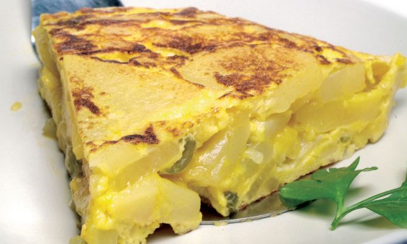

Tortilla de patatas
|
Ingredientes para Tortilla de patatas
| 8 huevos camperos o 10 huevos normales | cebolla grande |
| 1Kg de patatas gallegas | Sal (al gusto) |
| Aceite de oliva virgen extra para la fritura de las patatas. |
Cómo preparar una tortilla de patatas. El concurso nacional de tortillas dice que este año la reina de todas las tortillas de patatas está en Galicia (Betanzos), así que a fardar de tortilla ¿qué os pensabais?
La descripción de la mejor tortilla de España según los entendidos del concurso nacional de tortilla de patatas se resume en dos frases:
“Tortilla con los mejores productos de su tierra”, y “Conseguir que el huevo conserve sus propiedades de sabor, color y aroma gracias a una cuidada elaboración en la que el huevo batido en sus justa medida y la patata caliente, gracias a una precocción, permiten que el huevo jugoso termine inundando el plato”.
Preparación de la tortilla de patatas
- Pelamos las patatas, las lavamos para quitar restos de suciedad y muy importante, las secamos.
- Cortamos en láminas semifinas, a mí no me gusta que se deshagan sino que al freírlas se tuesten un poco. Las colocamos en un bol grande, donde luego vamos a mezclar con el huevo y añadimos sal al gusto. Removemos bien y reservamos.
- Elegimos nuestra sartén más grande y antiadherente. La ponemos al fuego y añadimos un buen aceite de oliva virgen extra.
- No tengáis miedo en gastaros un poco de dinero en aceite, le va a dar ese punto de sabor que distingue vuestra tortilla de las demás, podéis emplear muchas variedades: arbequina, picual, cornicabra, hojiblanca, royal… el que más os guste, pero de calidad.
- Introducimos las patatas cortadas y ya saladas y dejamos que se cocinen durante aproximadamente veinte minutos a fuego bajo.
- El tema del grosor de las patatas también va a gustos. Hay quien prefiere cortarlas a trozos muy pequeños, en láminas muy finas que casi se rompan al freír y o más bien grandes.
- Mientras se están friendo las patatas, en el bol donde luego vamos a echar las patatas batimos los huevos, reservamos
- Pelamos la cebolla y cortamos lo más fino posible.
- En otra sartén calentamos aceite de oliva y añadimos los trozos de cebolla.
 Pochamos hasta que tenga un color dorado, que tenga un punto de caramelización pero sin llegar a quemarse. La cebolla se hará antes que las patatas, así que escurrimos y añadimos al bol con el huevo batido.
Pochamos hasta que tenga un color dorado, que tenga un punto de caramelización pero sin llegar a quemarse. La cebolla se hará antes que las patatas, así que escurrimos y añadimos al bol con el huevo batido.